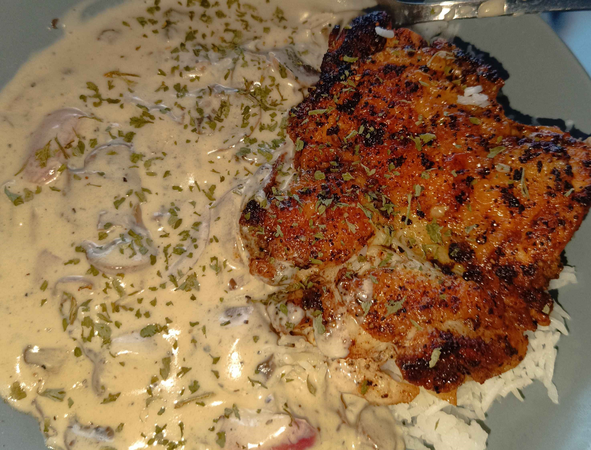

Sauce Forestière au champignon et au poulet
Une recette classique de la cuisine française, que l'on a déjà goûtée au moins une fois. Cette recette est présentée en détail par notre chef cuisinier Emmanuel, qui souhaite vous transmettre sa recette favorite de sauce forestière aux champignons.
Avant de commencer, vérifiez d'avoir les bons ingrédients :
- Sel & poivre
- 300 grammes de champignons
- 1 oignon moyen blanc ou rouge
- 2 gousses d'ail
- 1 petit pot de crème fraîche liquide
- Vin blanc ou jus de citron
- Cuisse de poulet désossée
Étapes de préparation
- Lavez et coupez les champignons en fines lamelles.
- Épluchez et hachez l'oignon et l'ail.
- Dans une poêle, faites revenir les oignons et l'ail avec un filet d'huile d'olive.
- Ajoutez les champignons et laissez cuire jusqu'à ce qu'ils libèrent leur eau.
- Incorporez les cuisses de poulet et faites-les dorer des deux côtés.
- Déglacez avec un peu de vin blanc ou de jus de citron, puis laissez réduire.
- Ajoutez la crème fraîche, assaisonnez avec sel et poivre, puis laissez mijoter 10 minutes.
- Servez chaud avec du riz ou des pâtes.